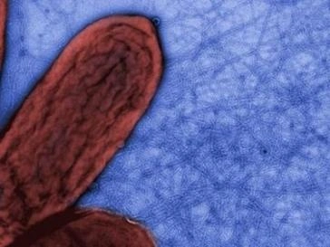

ဒီလို သိပ္ပံ ပညာရှင်တွေ ရှာဖွေ နေတဲ့ သန့်ရှင်း စွမ်းအင် ထုတ်ဖို့ နည်းလမ်း တွေထဲက တစ်ခုကတော့ “လေ” ထဲကနေ လျှပ်စစ် စွမ်းအင် ထုတ်ယူမယ့် နည်းလမ်းပဲ ဖြစ်ပါတယ်။
အမေရိကန် ပြည်ထောင်စု မက်ဆာချူးဆက် ပြည်နယ် University of Massachusetts Amherst တက္ကသိုလ် က သုတေသီ တွေဟာ ကမ္ဘာ့ လေထု ထဲကနေ သန့်ရှင်းစွာ လျှပ်စစ် စွမ်းအား ထုတ်နိုင်မယ့် နည်းလမ်း တစ်ခုကို ဖော်ထုတ် နိုင်ခဲ့ပါတယ်။ သူတို့ရဲ့ တွေ့ရှိ ချက်ကို Nature သုတေသန ဂျာနယ်မှာ တင်ပြ ထားပါတယ်။
ဒီ သုတေသီ တွေဟာ သူတို့ရဲ့ နည်းလမ်းကို သဘာဝ အလျှောက် ရှင်သန်တဲ့ ဘက်တီးရီးယား တစ်မျိုးကို လေ့လာရင်း တွေ့ရှိခဲ့တာ ဖြစ်ပါတယ်။ ဒီ ဘက်တီးရီးယား ပိုးကောင်ကို ၁၉၈၇ ခုနှစ်က အမေရိကန် ပြည်ထောင်စု ပိုတိုမက် မြစ်ကမ်းက ရွှံ့ထဲမှာ ရှာတွေ့ခဲ့တာ ဖြစ်ပါတယ်။

ဒီ Geobacter ပိုးတွေရဲ့ ထူးခြား ချက်ကတော့ သူတို့ဟာ လျှပ်စစ် ဓါတ်အား ထုတ်ပေး နိုင်တာပဲ ဖြစ်ပါတယ်။
ဆက်စပ်ဆောင်းပါး – အာကာသထဲမှာ လျှပ်စစ်ထုတ်ပြီး ကမ္ဘာကို ပြန်ပို့နိုင်ဖို့ သုတေသနပြု
ဒီလို လျှပ်စစ် ထုတ်ပေးနိုင် ရုံတင် မကဘူး ဒီ ဘက်တီးရီးယားဟာ အလွန် သေးမျှင်တဲ့ နာနို ဝါယာကြိုးမျှင် တွေကိုလဲ ထုတ်လုပ် ပေးနိုင်ပါတယ်။ ဒီ နာနိုဝါယာ ကြိုးမျှင်တွေဟာ လျှပ်စစ် ဓါတ်ကူးနိုင်တဲ့ အစွမ်း ရှိပါတယ်။
မက်ဆာ ချူးဆက် တက္ကသိုလ်က နည်းပညာ သုတေသီ တွေဟာ ဒီ Geobacter ပိုးမွှား အမြောက်အများကို ဈေးသက်သက် သာသာနဲ့ အလွယ်တကူ မွေးပေးနိုင်မယ့် နည်းလမ်းကို ရှာဖွေ တွေ့ရှိ ခဲ့ပါတယ်။
ဒီ့နောက်မှာ နောက်တဆင့် အနေနဲ့ ဒီ နာနိုဝါယာ ကြိုးမျှင်တွေကို ဘယ်လို လက်တွေ့ အသုံးချလို့ ရမလဲဆိုတာကို ကြိုးစား ရှာဖွေ ခဲ့ပါတယ်။ ဒီ သုတေသန ရဲ့ ရလဒ် ကတော့ “Air-gen” လို့ ခေါ်တဲ့ လေထဲက လျှပ်စစ် ထုတ်စက်ပဲ ဖြစ်ပါတယ်။
ဒီ လေထဲက လျှပ်စစ်ထုတ်စက် မှာ ၁၀ မိုက်ကရွန် အထူရှိတဲ့ Geobacter နာနိုဝါယာ တွေကို ဖြန့်ခင်းထားတဲ့ အလွှာပါးလေး တစ်ခု ရှိပါတယ်။ ဒီ အလွှာ ပါးလေးကို လျှပ်စစ် အငုတ် အပေါ်မှာ ဖြန့်တင် ထားလိုက် ပါတယ်။ နောက်တခါ သူ့ပေါ်မှာ အခြား လျှပ်စစ်ငုတ် အသေးလေး တစ်ခုကိုလဲ တင်ထား လိုက်ပါတယ်။
ဒီ နာနိုဝါယာ အလွှာလေးဟာ လေထဲက ရေငွေ့တွေကို စုပ်ယူ ပြီး လျှပ်စစ် ဓါတ်အား ထုတ်ပေးပါတယ်။ ဒီ ထွက်လာတဲ့ လျှပ်စစ် ဓါတ်အားဟာ လျှပ်စစ် အငုတ် တစ်ခုကနေ ထွက်ပြီး အခြား လျှပ်စစ် အငုတ်ကနေ ပြန်ဝင် သွားပါတယ်။
အခု လက်ရှိ သုတေသန စမ်းသပ် မှုတွေအရ ၇ မိုက်ကရို မီတာ အထူရှိတဲ့ Air-gen အလွှာ တစ်ချပ်ဟာ တစ် စင်တီမီတာ ပတ်လည် တစ်ကွက်ကို လျှပ်စစ် ၁၇ မိုက်ကရို အမ်ပီယာ ထုတ်ပေးနိုင်စွမ်း ရှိပါတယ်။
Air-gen အလွှာတွေ တစ်ခုနဲ့ တစ်ခု ဆက်ပြီးတော့လဲ တည်ဆောက် နိုင်ပါတယ်။ ဒီလို အထပ်ထပ် ထပ်ထားတဲ့ Air-gen အမျိုးအစား ဟာ လျှပ်စစ်ဓါတ်အား ထုတ်လုပ် ပေးနိုင်မှု ပိုအားကောင်း လာတာကိုလဲ တွေ့ကြရ ပါတယ်။
ဒီ Air-gen ကနေ ထွက်တဲ့ လျှပ်စစ်ဓါတ်အားဟာ အရင် တီထွင်ခဲ့တဲ့ သဘာဝ လျှပ်စစ်ထုတ်နည်းလမ်းတွေထက် ပိုပြီး တည်ငြိမ်တဲ့ လျှပ်စစ်စွမ်းအင်ကို ထုတ်ပေးနိုင် ပါတည်။
ယခုအခါ သိပ္ပံ သုတေသီ တွေဟာ ဒီ စနစ်ကို အသုံးပြု ထားတဲ့ ဘက်ထရီ အသေးလေး တစ်မျိုးကို စမ်းသပ်နေ ကြပါတည်။ သူတို့က မဝေးတော့တဲ့ နောင်တချိန်မှာ ဒီ နည်းလမ်းနဲ့ ထုတ်လုပ်ထားတဲ့ ဘက်ထရီ တွေကို နေရာ အနှံ့အပြားမှာ အသုံချ နိုင်လိမ့်မယ် လို့ ယုံကြည် ကြပါတယ်။
ဒီ Air-gen နည်းပညာနဲ့ ထုတ်လုပ်ထားတဲ့ ဘက်ထရီ တွေဟာ နှစ်ပေါင်းများစွာ ခံနိုင်မယ်လို့ ဆိုပါတယ်။ ဒီ ဘက်ထရီ တွေဟာ အားပြန်သွင်း ဖို့လဲ လိုမှာ မဟုတ်ဘူးလို့ ဆိုပါတယ်။
သုတေသီ တွေရဲ့ ရေရှည် ရည်မှန်းချက် ကတော့ ဒီ နည်းပညာကို အခြေခံ ထားတဲ့ အကြီးစား လျှပ်စစ် ထုတ်လုပ်ရေး နည်းစနစ် တွေကို ရှာဖွေ ဖို့ပဲ ဖြစ်ပါတယ်။ ဥပမာ အိမ်သုတ် ဆေးထဲ ဒီ နည်းပညာကို ပေါင်းစပ် သုံးစွဲလို့ ရနိုင်မယ် ဆိုရင် အိမ် နံရံက သုတ်ဆေးကနေ လျှပ်စစ်ဓါတ်အား အလွယ်တကူ ထုတ်ပေးနိုင်မှာ ဖြစ်ပါတယ်။
ဒီ သုတေသနမှာ ပါဝင်သူ တစ်ဦး ဖြစ်တဲ့ Jun Yao ကတော့ “ဒါဟာ ပရိုတင်းဓါတ် အခြေပြု လျှပ်စစ် အသုံးအဆောင်တွေ အသုံးပြု နိုင်မယ့် ခေတ်သစ်ရဲ့ အစပဲ ဖြစ်ပါတယ်” လို့ မှတ်ချက် ပေးခဲ့ပါတယ်။
Ref: Microbes can produce electricity out of thin air. Scientists have finally figured out how to harvest it | BigThink